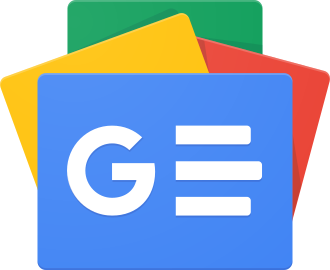

Google News
Source: https://en.wikipedia.org/wiki/Google_News
Category: products_media
Depth: 1
Summary
Google News is a news aggregator service developed by Google. It presents a continuous flow of links to articles organized from thousands of publishers and magazines.
Images

Full Article
News aggregator website and app
This article is about Google's news aggregator. For the former app, see Google News & Weather. For Google's initiative to support journalists, see Google News Lab. For access to newsgroups through Google, see Google Groups.
Google News is a news aggregator service developed by Google. It presents a continuous flow of links to articles organized from thousands of publishers and magazines.
Google News is available as an app on Android, iOS, and the Web. Google released a beta version in September 2002 and the official app in January 2006. The initial idea was developed by Krishna Bharat.
The service has been described as the world's largest news aggregator. In 2020, Google announced they would be spending US$1 billion to work with publishers to create Showcases, "a new format for insightful feature stories".
History
As of 2014, Google News was watching more than 50,000 news sources worldwide. Versions for more than 60 regions in 28 languages were available in March 2012. As of May 2025[update], service is offered in the following 38 languages: Afrikaans, Arabic, Bengali, Bulgarian, Catalan, Cantonese, Chinese, Czech, Dutch, English, French, German, Greek, Hebrew, Hindi, Hungarian, Italian, Indonesian, Japanese, Kannada, Korean, Latvian, Lithuanian, Malayalam, Norwegian, Polish, Portuguese, Romanian, Russian, Serbian, Spanish, Swedish, Tamil, Telugu, Thai, Turkish, Ukrainian and Vietnamese.
The service covers news articles appearing within the past 44 days on various news websites. In total, Google News aggregates content from more than 20,000 publishers. For the English language, it covers about 4,500 sites; for other languages, fewer. Its front page provides roughly the first 200 characters of the article and a link to its larger content. Websites may or may not require a subscription; sites requiring a subscription are no longer noted in the article's description.
The "first click free" program, introduced in 2008, allowed users to find and read articles behind a paywall. The reader's first click to the content is free, and the number after that would be set by the content provider. On December 1, 2009, Google changed its policy to allow a limit of five articles per day, in order to protect publishers from abuse. This policy was again changed on September 29, 2015 where this limit was changed to three articles per day. In October 2017, this program was replaced with a "flexible sampling" model in which each publisher chooses how many, if any, free articles were allowed.
The layout of Google News underwent a major revision on May 16, 2011.
On July 14, 2011, Google introduced "Google News Badges", which it later retired in October 2012.
In June 2017, the desktop version of Google News saw a thorough redesign that according to Google had the goal to "make news more accessible and easier to navigate ... with a renewed focus on facts, diverse perspectives, and more control for users." Yet several options such as the search tools menu were removed along with the redesign, making searches much more difficult. It now uses a card format for grouping related news stories, and as summarized by Engadget, "doesn't look like a search results page anymore", removing text snippets and blue links.
Historically users could choose to hide articles originating from a news source. These hidden sources can still be listed in a user's settings however these exclusions are no longer honoured. The option to exclude a source of news items is no longer presented.
According to a 2020 study in the journal Nature Human Behaviour, Google News prioritizes local news outlets when individuals search for keywords specifically related to topics of local interest.
On October 18, 2023 Google confirmed they cut at least 40 jobs in the news division. Google clarified that: "These internal changes have no impact on our misinformation and information quality work in News."
Controversies with publishers
EU copyright and database right
In March 2005, Agence France-Presse (AFP) sued Google for $17.5 million, alleging that Google News infringed on its copyright because "Google includes AFP's photos, stories and news headlines on Google News without permission from Agence France Presse". It was also alleged that Google ignored a cease and desist order, though Google counters that it has opt-out procedures which AFP could have followed but did not. Google made arrangements, starting in August 2007, to host Agence France-Presse news, as well as the Associated Press, Press Association and the Canadian Press. In 2007, Google announced it was paying for Associated Press content displayed in Google News, however the articles are not permanently archived. That arrangement ceased on December 23, 2009 when Google News ceased carrying Associated Press content.
In 2007, a preliminary injunction and then a Belgian court ruled that Google did not have the right to display the lead paragraph from French-language Belgian news sources when Google aggregated news stories, nor to provide free access to cached copies of the full content ("in cache" feature), due to both copyright and database rights.
Google responded by removing the publications both from Google News and the main Google web search.
According to the 2009 Report on the outlook for copyright in the EU:
With the Google-Copiepresse judgment of 13 February 2007, on the other hand, the Belgian judge ruled that a copy of a webpage memorised by the Google server and the existence of a link giving public access to the same webpage contravene the rights of reproduction and communication to the public. [...] the Belgian judge took the view that Google’s reproduction without comment of parts of articles was not covered by this exception. The same judgement does not consider the exception in respect of quotations for purposes such as criticism or review provided for in Article 5.3.d to be applicable to the Google News service.
In May 2011 the ruling was upheld in appeal after Google reiterated most legal defences from the first grade plus some new ones, which the Court rejected based on the Infopaq ruling and others. In July 2011, Copiepress publications were restored on Google News after they requested so and renounced any complaint based on the judgement.
Nevertheless, in a 2017 briefing on the ancillary copyright for press publishers paid by the European Commission, Prof. Höppner thought the database right was not violated by most platforms on the basis that the "substantial part" criterion may be too high a bar after the 2002 decision in Fixtures Marketing v. OPAP and that no publisher was known to have won a case with it.
Compensation for disseminating access to news
The 2019 Directive on Copyright in the Digital Single Market requires Google News to license content from news sites. As of June 2023, Google had reached copyright licensing agreements with 1,500 publications in order to come into compliance with the Directive.
Lobbying by Europe-based news outlets goes back to at least the 2010s. In Germany, their lobbying led to the introduction of the ancillary copyright for press publishers in 2013. In October 2014, a group of German publishers granted Google a license to use snippets of their publications gratis; the group had first claimed that such snippets were illegal, and then complained when they were removed by Google. In December 2014, Google announced it would be shutting down the Google News service in Spain. A new law in Spain, lobbied for by the Spanish newspaper publishers' association AEDE, required for news aggregators to pay news services for the right to use snippets of their stories on Google News. Google chose to shut down their service and remove all links to Spain-based news sites from international versions of the site. The Spanish version reopened in 2022, after Spain transposed the 2019 European Union copyright rule into national law, enabling media outlets to negotiate with tech companies rather than imposing a mandatory fee system.
In 2012, Brazil's National Association of Newspapers (AJN) jointly pulled out of allowing their content to be shown on Google News. The change resulted in only a "negligible" drop in traffic
In October 2020, Google announced a new program known as "Showcases", in which the company would pay publishers to curate featured news content displayed in branded panels on Google News and Discover. Showcases may occasionally include free access to paywalled content. The program was first launched in Argentina, Australia, Brazil, Canada, France, Germany, and the United Kingdom. The feature's launch in Australia came amid the implementation of the country's News Media Bargaining Code; Google stated that it believed the Showcase program was in compliance with the Code.
In response to the Online News Act, Google announced it would block all Canadian news sites from visitors located in Canada, when the act goes into effect near the end of 2023.
Features and customization
A pull-down menu at the top of search results enables users to specify the time period in which they wish to search for articles. This menu includes options such as: past day, past week, past month, or a custom range.
Users can request e-mail "alerts" on various keyword topics by subscribing to Google News Alerts. E-mails are sent to subscribers whenever news articles matching their requests come online. Alerts are also available via RSS and Atom feeds.
Users used to be able to customize the displayed sections, their location on the page, and how many stories are visible with a JavaScript-based drag and drop interface. However, for the US site, this has been disabled in favor of a new layout; roll-out of this layout is planned for other locales in the near future. Stories from different editions of Google News can be combined to form one personalized page, with the options stored in a cookie. The service has been integrated with Google Search History since November 2005. Upon its graduation from beta, a section was added that displays recommended news based on the user's Google News search history and the articles the user has clicked on (if the user has signed up for Search History).
A revamped version of Google News was introduced in May 2018 that included artificial intelligence features to help users find relevant information.
News Archive Search
Main article: Google News Archive
On June 6, 2006, Google News expanded, adding a News Archive Search feature, offering users historical archives going back more than 200 years from some of its sources. There was a timeline view available, to select news from various years.
An expansion of the service was announced on September 8, 2008, when Google News began to offer indexed content from scanned newspapers. The depth of chronological coverage varies; beginning in 2008, the entire content of the New York Times back to its founding in 1851 has been available.
In early 2010, Google removed direct access to the archive search from the main Google News page, advanced news search page and default search results pages. These pages indicated that the search covered "Any time", but did not include the archive and only included recent news.
During the summer of 2010, Google decided to redesign the format of the Google news page. This redesign engendered significant complaints from regular users of the service.
In May 2011, Google cancelled plans to scan further old newspapers. About 60 million newspaper pages had been scanned prior to this event. Google announced that it would instead focus on "Google One Pass, a platform that enables publishers to sell content and subscriptions directly from their own sites".
In August 2011, the "News Archive Advanced Search" functionality was removed entirely, again generating complaints from regular users who found that the changes rendered the service unusable. Archival newspaper articles could still be accessed via the Google News Search page, but key functionalities such as the timeline view and ability to specify more than 10 results per page were removed.
Coverage artifacts
On September 7, 2008, United Airlines, which was the subject of an indexed, archived article, lost and later not quite regained US$1 billion in market value when a 2002 Chicago Tribune article about the bankruptcy filing of the airline in that year appeared in the current "most viewed" category on the website of the Sun-Sentinel, a sister paper. Google News index's next pass found the link as new news, and Income Security Advisors found the Google result to be new news, which was passed along to Bloomberg News, where it was briefly a current headline and very widely viewed.
See also
- Apple News
- Yahoo! News
- Ask BigNews
- Google Fast Flip
- Google News & Weather
- Google Play Newsstand
- Google Reader
- Google Search
- List of Google products
- Techmeme
References
External links
| - v - t - e Google Search | |
|---|---|
| Timeline of Google Search | |
| Features | - AI Overviews - AI Mode - Knowledge Graph - SafeSearch - SearchWiki - Voice Search - Google Personalized Search |
| Component algorithms and updates | - Googlebot - Hummingbird - Mobilegeddon - PageRank - Matrix - Panda - Penguin - Pigeon - RankBrain |
| Special purpose search engines | - Google Dataset Search - Google Books - Google Images - Google Finance - Google News - Google News Archive - Google Scholar - Google Shopping - Dragonfly - Google Blog Search - Google Code Search |
| Data insights | - Google Books Ngram Viewer - Google Trends - Google Insights for Search - Year in Search |
| Developer and business tools | - Google Programmable Search Engine - Google Search Console - Get Your Business Online |
| Related | - "Reunion" - Google Search Appliance - FairSearch |